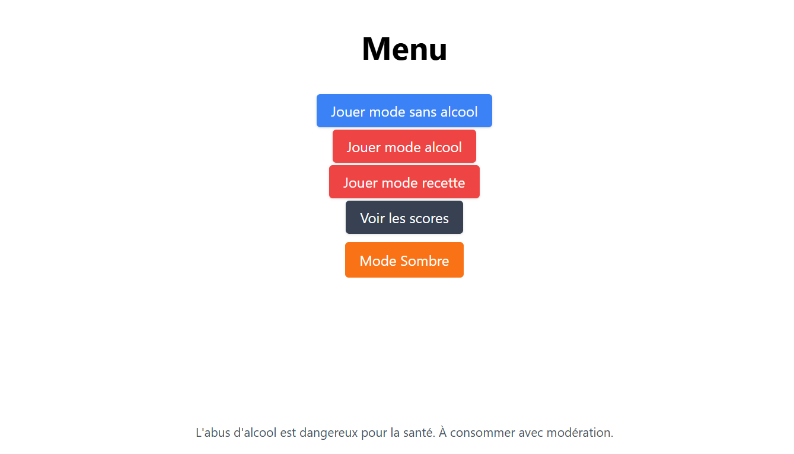

👥 Jeu de devinette de cocktails

🎯 Objectif du projet
L'objectif de ce projet était de concevoir un jeu web interactif permettant à l'utilisateur de deviner des cocktails à partir d'image, tout en exploitant des données récupérées dynamiquement via une API externe.
👤 Mon rôle dans le projet
Ce projet a été réalisé en groupe de quatre personnes. J'ai participé au développement du backend en Python avec Flask, à l'intégration de l'API externe ainsi qu'à la liaison entre le backend et l'interface web.
🧠 Compétences développées
- Développement backend en Python avec Flask
- Exploitation d'API externes
- Création d'une interface web dynamique en HTML
- Travail en équipe et organisation du projet avec Git
🛠️ Compétences utilisées
Ce projet m'a permis de comprendre comment relier une interface web à un backend Python, d'exploiter des API externes et de travailler efficacement en équipe sur un projet complet.